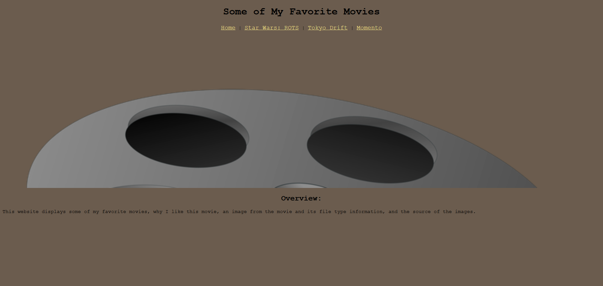
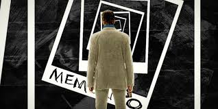

Visual Media Project
About
This lab assignment was all about adding visual elements to websites! I created a multipage website that showcases examples of common web graphic formats and uses CSS to include background and aesthetic images.
| Format | Best Use Case | File Size |
|---|---|---|
| JPEG | Photographs | Medium |
| PNG | Graphics with transparency | Large |
| SVG | Logos & icons | Small |
| GIF | Simple animations | Varies |
Key Concepts Learned
- How to optimize images for web performance
- Using CSS background images effectively
- Creating image galleries with responsive design
- Implementing CSS filters and effects
Project Examples
